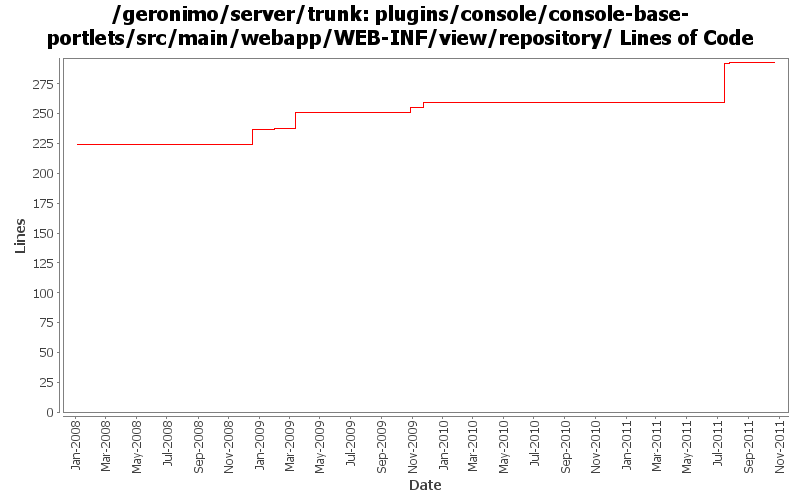

[root]/plugins/console/console-base-portlets/src/main/webapp/WEB-INF/view/repository

| Author | Changes | Lines of Code | Lines per Change |
|---|---|---|---|
| Totals | 17 (100.0%) | 177 (100.0%) | 10.4 |
| rwonly | 3 (17.6%) | 80 (45.2%) | 26.6 |
| xuhaihong | 2 (11.8%) | 53 (29.9%) | 26.5 |
| jbohn | 4 (23.5%) | 29 (16.4%) | 7.2 |
| dwoods | 7 (41.2%) | 10 (5.6%) | 1.4 |
| djencks | 1 (5.9%) | 5 (2.8%) | 5.0 |
GERONIMO-5586 modify the algorithm to calculate Artifact
2 lines of code changed in 1 file:
GERONIMO-6094 Some issues of confirm msg tld in admin console
1 lines of code changed in 1 file:
GERONIMO-5586 Modified the previous code logic so that it can work and add the ability to install library cli
77 lines of code changed in 1 file:
Add help messages to repository portlet
18 lines of code changed in 1 file:
GERONIMO-4658 Editor for artifact aliases. original patch from Victor Fang, with modifications. Merge from 2.2 with little attempt to fix problems
5 lines of code changed in 1 file:
GERONIMO-4597 Validate Web Admin Console input - fixes for CVE-2008-5518, CVE-2009-0038, and CVE-2009-0039
8 lines of code changed in 1 file:
GERONIMO-4517 Apply unified message display style(G-4484) to javascript alert messages. Together with the localization of these messages. Thanks for the patch, Gang Yin
35 lines of code changed in 1 file:
cleanup the way portlet action parameters are passed
2 lines of code changed in 1 file:
GERONIMO-4473 correct message
4 lines of code changed in 1 file:
GERONIMO-4473 validate group, artifact, version and type when adding an archive to the repo
15 lines of code changed in 1 file:
GERONIMO-4081 Accessibility issues. Applied GERONIMO-4081-console.patch from Ivan.
10 lines of code changed in 1 file:
GERONIMO-1775 Internationalization of the Admin Console. First patch from YunFeng.
0 lines of code changed in 6 files: